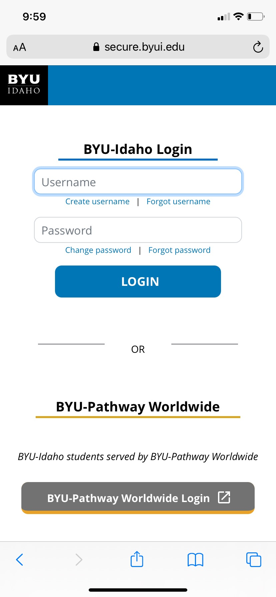
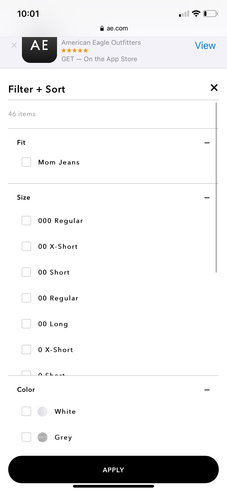

Visual Hierarchy
Making the the Log In buttom bigger and in another color makes it seem very prominent.
White Space and Clean Design
Brigham Young University-Idaho
Brigham Young University-Idaho The white space on the Brigham Young University website makes it look very organized and easy to follow.
Fitt's Law
American Eagle
American Eagle This website has a filter which makes it easy for users to find what they are looking for.